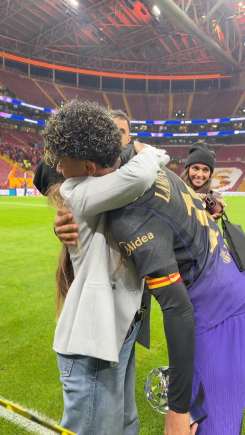
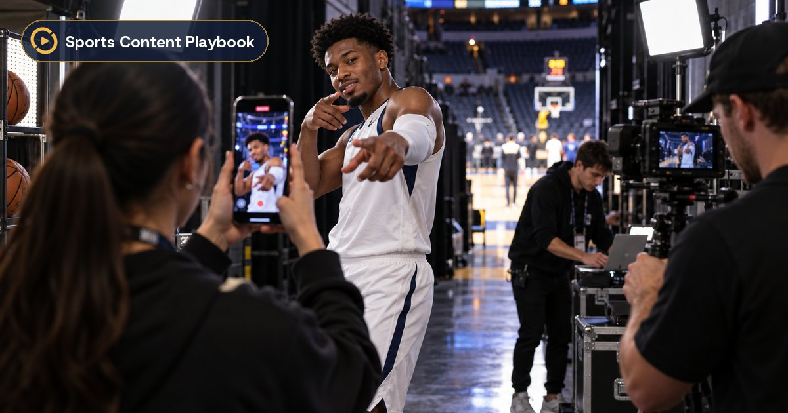

Menú → Recursos
Propuesta para que esté a la altura de «Plataforma»: tarjetas con su color, un pequeño visual y lo último de cada sección.
AntesRecursos ˄
Tableros guardadosLos posts que has guardado, por tablero.
BlogIdeas y tendencias en redes deportivas.
Social NewsLo que pasa en las cuentas de los clubes.
Preguntas frecuentesTodo lo que quieres saber antes de empezar.
Recursos ˄


 ▣Tableros guardados
▣Tableros guardados
Tus carpetas con las ideas que quieres hacer.

NuevoIdeas para equipos de la NBA antes del tip-off ✎BlogTendencias e ideas de contenido deportivo.
 Barcelona, Liverpool y PSG con Gemini
Barcelona, Liverpool y PSG con Gemini Instagram prueba Reels en la home
Instagram prueba Reels en la home TikTok deja republicar comentarios
TikTok deja republicar comentariosLo que cambia en cada red, explicado para clubes.
¿Puedo cancelar cuando quiera?Sí, en un clic desde tu perfil. ?Preguntas frecuentesTodo lo que quieres saber antes de empezar.
▶¿Qué es SCP?Sports Content Playbook en 2 minutos
⌕ Buscar en blog, noticias y preguntas…/
①Tableros guardados con sus fotosMini carpeta con las portadas de lo último guardado y cuántos posts y carpetas tienes (solo con sesión iniciada).
②Blog con el último artículoPortada y título del artículo más nuevo con la etiqueta «Nuevo» si es de esta semana.
③Social News "en directo"Los 3 titulares más recientes con el logo de su red y el punto verde de "Actualizado hoy".
④Preguntas frecuentes como conversaciónUna pregunta y respuesta de ejemplo para que se entienda de un vistazo.
⑤«SCP en 2 minutos» destacadoAbajo, como en Plataforma, con el dorado de la marca (solo para visitantes sin plan).
⑥Buscador de recursosBuscar a la vez en el blog, Social News y las preguntas, con atajo de teclado.
⑦Cada sección con su colorDorado (tableros), morado (blog), verde (noticias) y azul (preguntas): igual que los tres pilares de Plataforma.
⑧Avisos de novedadUn punto en la pestaña «Recursos» cuando hay noticias o artículos nuevos desde tu última visita.